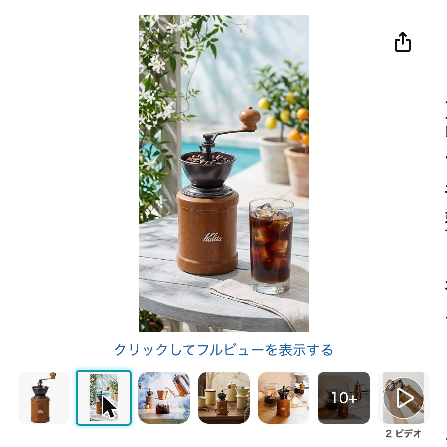
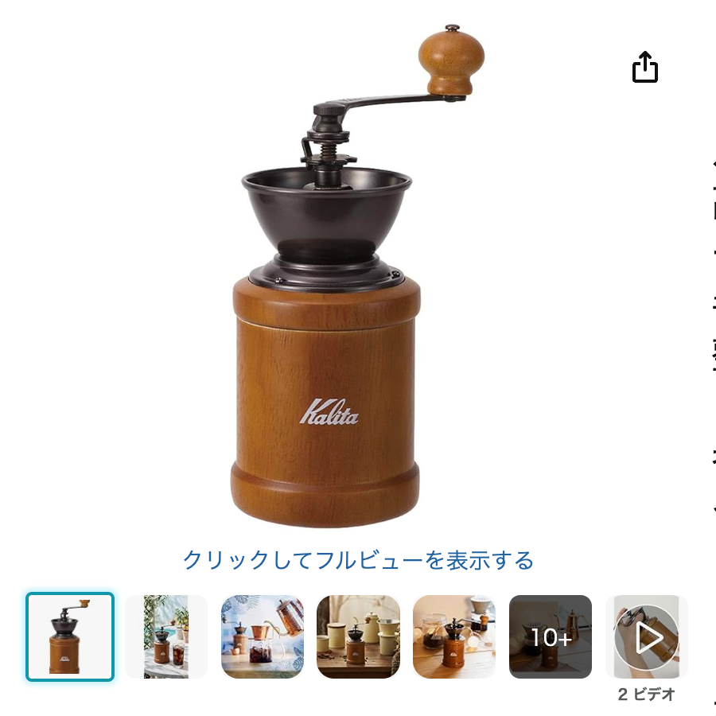
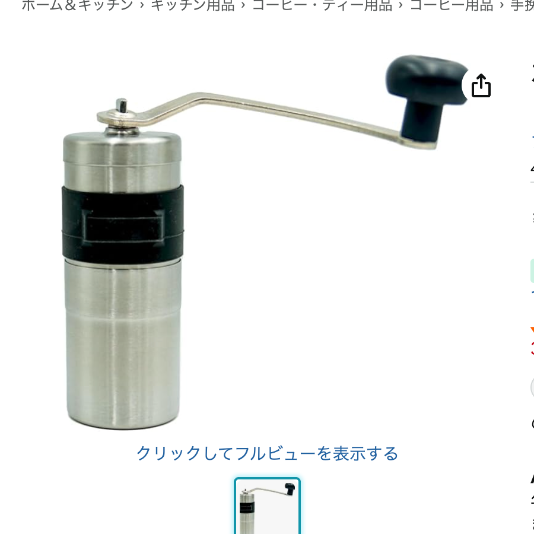
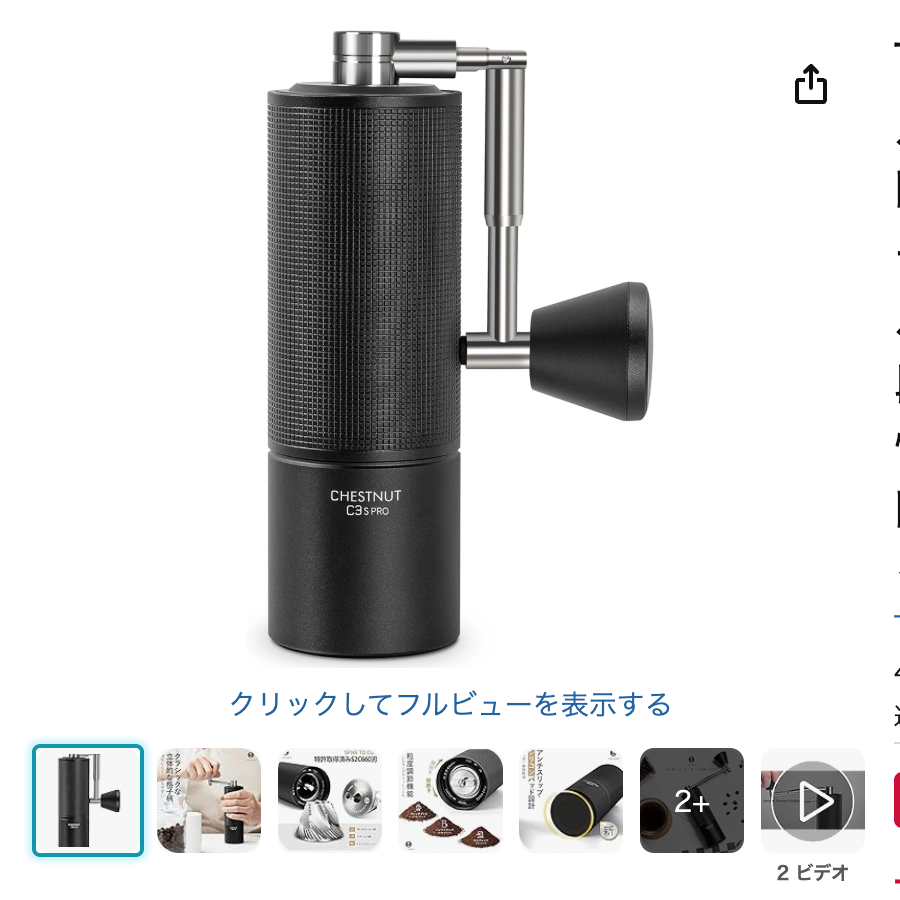
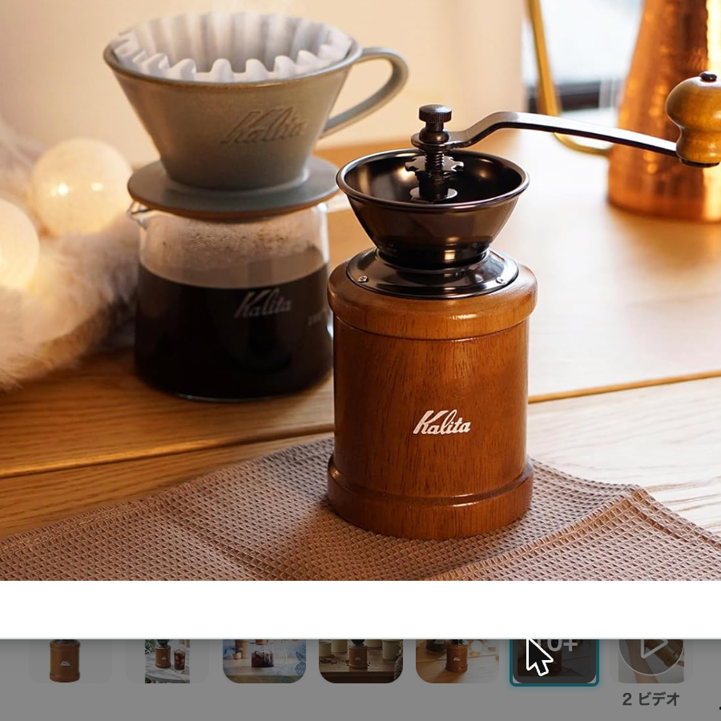

手挽きコーヒーミル、5本を比較
——HARIOのベストセラーから本格派まで

電動グラインダーを置くほどのスペースがない、旅行や出張にも持っていきたい、あるいは単純に豆を挽く時間そのものが好き。理由はいろいろありますが、手挽きミルは一台あると長く使える道具です。
ひとくちに手挽きミルといっても、刃の素材も、粒度の合わせ方も、見た目もかなり幅があります。定番のHARIOから、本格志向のモデルまで5本を並べて整理しました。参考にしたのは、実際に使っている方々のレビューです。
選び方の整理
見るところは3つあります。
- 刃の素材 — セラミックか金属か。お手入れのしやすさと価格に関わる
- 調整の方式 — ネジで無段階に合わせるか、段階ごとにクリックが入るか
- 見た目とサイズ — キッチンに置くか、持ち出すか
※本文中の商品リンクはアフィリエイトリンクです（PR）。
一覧
- HARIO コーヒーミル・セラミックスリム MSS-1B¥1,927
- Kalita コーヒーミル 木製 KH-3AM¥3,480
- Porlex コーヒーミル2 ミニ¥9,130
- 台屋のコーヒーミル（ブナ/ウォルナット）¥9,900
- TIMEMORE C3S PRO¥11,584
※価格・レビュー件数は2026年8月8日時点のAmazon・楽天市場の情報です（台屋のみ楽天）。
刃の素材
セラミック刃は錆びず、匂い移りが少ないのが利点です。HARIOとPorlexがこのタイプ。金属刃はKalita・台屋・TIMEMOREで、切れ味が均一に出やすく、耐久性を評価する声が多く見られます。どちらが優れているというより、水洗いの頻度やお手入れの仕方で選ぶ人が多い印象です。
調整の方式
HARIOとKalitaはネジを回して無段階に粒度を合わせるタイプ。細かい調整はできますが、「毎回同じ粗さに戻すのが難しい」というレビューも見かけます。Porlex・TIMEMOREはクリックで段階が分かるタイプで、TIMEMOREは36段階という細かさです。毎回同じ淹れ方をする人には、クリック式のほうが再現性を持たせやすいはずです。
それぞれの性格
HARIO コーヒーミル・セラミックスリム MSS-1B（¥1,927）

手挽きコーヒーミルのカテゴリでベストセラー1位、レビュー件数も1万件を超えています。価格の手頃さと、円錐形でコンパクトな「スリム」という名前の通りの収まりの良さが支持されている理由のようです。最初の1台として選ばれることが多いモデルです。
Kalita コーヒーミル 木製 KH-3AM（¥3,480）

木製ボディにドーム型の受け皿という、昔ながらの喫茶店にありそうな見た目です。実用一辺倒ではなく、キッチンに置いておきたい佇まいを求める人に選ばれています。プレゼントとしてのレビューも多く見られました。
Porlex コーヒーミル2 ミニ（¥9,130）

日本製・ステンレスの筒型ボディで、60段階の粒度調整ができます。コンパクトなミニサイズは旅行やアウトドアに持ち出す用途のレビューが目立ちます。1年保証つきの正規品という安心感も選ばれる理由のひとつのようです。
台屋 のコーヒーミル（ブナ/ウォルナット・¥9,900）

新潟県三条市の金属加工メーカーが手がける、木製ボディ・ステンレス刃のコニカル式ミルです。レビュー件数はまだ多くありませんが評価は高く、国産にこだわりたい人・木の質感を求める人からの支持がうかがえます。5本の中で唯一、量産ブランドではなく地場メーカーの製品です。
TIMEMORE C3S PRO（¥11,584）

全金属のステンレス円錐刃で、36段階という細かい粗さ調整ができます。折り畳み式のハンドルで持ち運びやすく、コーヒー専門店のスタッフのレビューも見かけるほど、本格志向の層から支持されているモデルです。5本の中では価格・仕様ともにいちばん本格派です。

選ぶなら
- 最初の1台、価格を抑えたいなら、HARIO セラミックスリム。レビュー数も価格も圧倒的です
- キッチンに置いておく道具として見た目も楽しみたいなら、Kalitaの木製タイプ
- 旅行やアウトドアに持ち出すなら、コンパクトなPorlexミニ
- 国産・木の質感にこだわりたいなら、台屋のコーヒーミル
- 挽き目の精度にこだわりたい、長く本格的に使いたいなら、TIMEMORE C3S PRO
毎朝の1杯のために選ぶ道具なので、価格だけでなく、粒度の合わせやすさや手入れのしやすさも含めて、自分の淹れ方に合うものを選ぶのがいちばんだと思います。